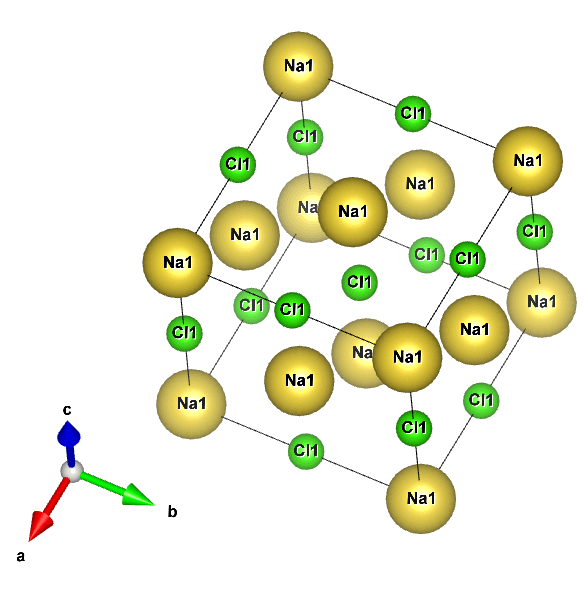

このサイトは化学系学部生が運営するサイトです。
高校化学から大学化学への話、
家で出来る計算化学の話や趣味の話をしていきます。

VESTAの論文
K. Momma and F. Izumi,
"VESTA 3 for three-dimensional visualization of crystal, volumetric and morphology data,"
J. Appl. Crystallogr., 44, 1272-1276 (2011).
当サイトでは、Googleによるアクセス解析ツール「Googleアナリティクス」を使用しています。
このGoogleアナリティクスはデータの収集のためにCookieを使用しています。
このデータは匿名で収集されており、個人を特定するものではありません。
この機能はCookieを無効にすることで収集を拒否することが出来ますので、お使いのブラウザの設定をご確認ください。
この規約に関しての詳細はGoogleアナリティクスサービス利用規約のページや
Googleポリシーをご覧ください。